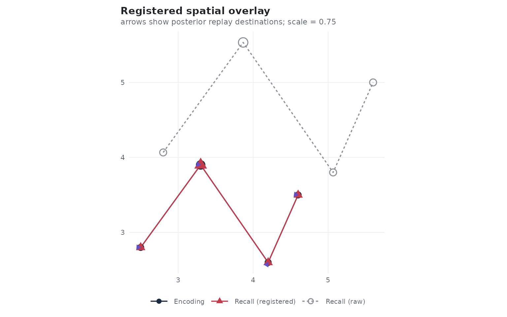
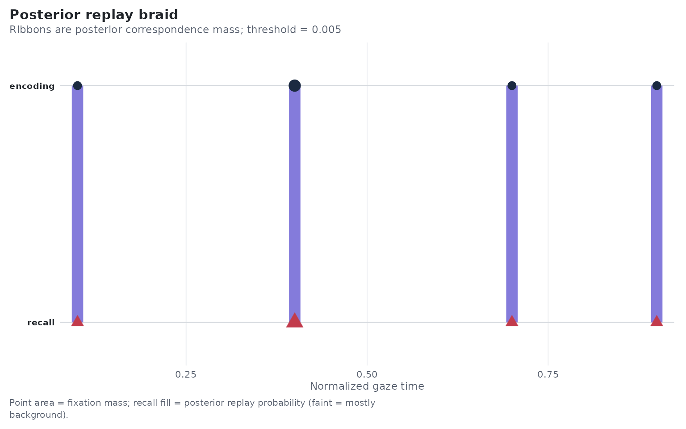
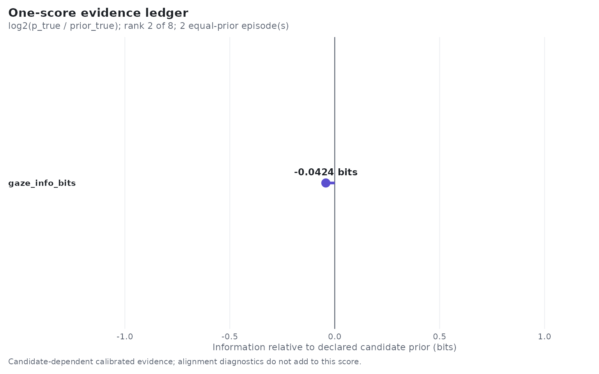
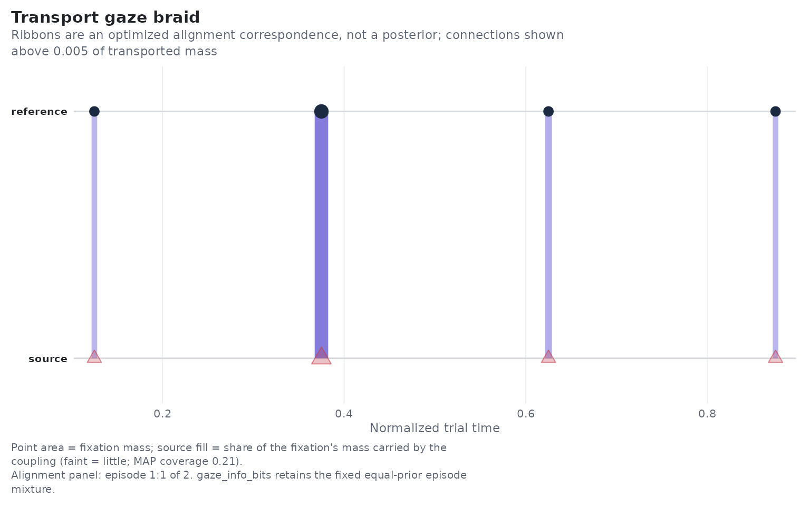

GazeWeave: Calibrated Item Information from Gaze Paths
GazeWeave.RmdThe inferential object
GazeWeave asks whether a held-out gaze path identifies its study item. It does not average several similarity dimensions. For each permitted candidate template it fits the same declared registration policy, obtains a candidate score, calibrates candidate probabilities on inner held-out partitions of the outer-training trials, and reports
Zero bits means that gaze did not improve on the candidate prior. One bit means that gaze doubled the probability assigned to the correct item relative to its prior. With equally likely candidates, the maximum is . Negative values mean that gaze made the correct item less plausible.
Replay (revision "2026.10", the default) observes each
recall fixation once, with its position and its duration, and scores a
candidate by the total log likelihood of the recall. Evidence therefore
grows with the number of recall fixations; there is no duration grid to
choose. The frozen revision "2026.08" instead divided a
duration-grid log likelihood by the number of grid bins.
Under revision "2026.10" both engines calibrate
candidate probabilities the same way (see
?gaze_calibration_control). Each held-out row gets its own
temperature,
,
where
counts the row’s evidence (Transport: duration-effective recall
fixations; Replay: recall fixations).
and
are fitted on inner held-out rows of the outer-training trials only. One
global temperature made sparse recalls overconfident and rich recalls
underconfident. This is calibration: it never changes the ranking of
candidates within a row. The fit’s prior pulls only toward the declared
candidate prior (less confidence), never toward a fixed temperature. A
typicality offset (the default for Transport, opt-in for Replay)
standardizes each candidate’s score against its scores on training
recalls of other items, so that candidates which match generic,
centre-biased gaze do not win by default; the adjusted scores are
ranking scores, not normalised likelihoods. If a training contrast has
fewer than four candidate items, Replay returns the declared prior (no
inner calibration estimate) under "2026.10", and
temperature one under "2026.08".
gaze_info_bits is the sole primary endpoint. Coverage,
spatial error, chronology, contraction, rank, and alignment stability
are nested diagnostics that explain the score; they are not additional
normalized outcomes.
Choose an engine deliberately
The public workflows make two roles explicit:
-
"replay"is the directional engine for encoding-to-recall studies. It is a directional probability model in which recall is a mixture of locally ordered replay, chunk restarts, and candidate-independent background gaze. - Transport is the symmetric explanatory alignment engine. Use
gaze_transport_cv()when neither path has a privileged direction and when one or several separate study presentations may inform each candidate.
There is no universal engine default. The common
gaze_weave_cv() dispatcher accepts
engine = "replay" or engine = "transport" and
also infers the engine from gaze_replay_spec() or
gaze_transport_spec(). Transport has a dedicated entry
point because its episode identifiers and declared candidate priors are
part of its estimand rather than optional plotting metadata.
Earlier internal experiments were labelled Transport v1, v2, and v3. Those were development names, never released APIs. The edge-normalized estimator formerly labelled v3 is now simply Transport; the older implementations have been removed. Version labels remain in internal and frozen validation provenance so the historical evidence stays auditable; they do not identify selectable methods.
The distinction affects interpretation. Replay’s braid contains posterior correspondence probabilities. Transport’s braid contains a regularized optimum; its diffuseness is partly controlled by numerical regularization and is not a posterior uncertainty statement.
A cross-fitted contraction example
The following paths differ by a known source-to-reference contraction and translation. Eight items keep the example compact while permitting an inner calibration split; scientific analyses should use more training items and predeclare the candidate pool.
make_path <- function(item) {
anchor <- c(item * 2.5, (item %% 2) * 2.8)
xy <- rbind(
anchor,
anchor + c(0.8, 1.1),
anchor + c(1.7, -0.2),
anchor + c(2.1, 0.7)
)
fixation_group(
x = xy[, 1], y = xy[, 2],
duration = c(1, 2, 1, 1), onset = c(0, 1, 3, 4)
)
}
encoding_paths <- lapply(1:8, make_path)
recall_paths <- lapply(encoding_paths, function(path) {
xy <- sweep(cbind(path$x, path$y), 2, c(0.4, -0.25), FUN = "-") / 0.75
fixation_group(
x = xy[, 1], y = xy[, 2],
duration = path$duration * 1.5,
onset = path$onset * 1.5
)
})
encoding <- tibble(
participant = "p1", image_id = 1:8, fixgroup = encoding_paths
)
recall <- tibble(
participant = "p1", image_id = 1:8, fixgroup = recall_paths
)The warp is learned only from training items and then applied identically to every candidate for a held-out path. Pair-specific free registration is not the default because it can rescue wrong templates.
replay_spec <- gaze_replay_spec(
transition_grid = list(
background = c(0.02, 0.08),
restart = c(0.02, 0.08),
advance = c(0.2, 0.4),
background_stay = 0.9
),
warp = gaze_warp_contraction(
center = c(0, 0), translation = TRUE, fit_by = "participant"
)
)
fit <- gaze_weave_cv(
ref_tab = encoding,
source_tab = recall,
match_on = c("participant", "image_id"),
contrast_on = "participant",
split_on = c("participant", "image_id"),
n_folds = 2,
seed = 4,
engine = "replay",
spec = replay_spec
)
broom::tidy(fit)
#> # A tibble: 8 × 3
#> participant image_id gaze_info_bits
#> <chr> <int> <dbl>
#> 1 p1 1 1.45
#> 2 p1 2 1.47
#> 3 p1 3 1.39
#> 4 p1 4 1.39
#> 5 p1 5 1.43
#> 6 p1 6 1.43
#> 7 p1 7 1.41
#> 8 p1 8 1.45tidy() returns only identifiers and
gaze_info_bits. Candidate probability, log loss, rank,
convergence, and fold columns are available through
broom::tidy(fit, diagnostics = TRUE). The complete object
retains candidate tables and the true-template alignment for audit and
plotting.
Read the gaze braid

Encoding, raw recall, registered recall, and posterior replay destinations.

Replay posterior correspondence between encoding and recall fixations, in normalized time.
Parallel ribbons support local order preservation. Crossings can
reflect chunk restarts or reordering. Faint recall time points support
the background state. The diagnostic panel reports posterior replay
coverage, background coverage, restart rate, and spatial RMSE. Those
quantities explain the fitted replay but do not add up to
gaze_info_bits, which is a contrast across candidate
templates.
Fit symmetric Transport
Transport replaces path-length-diluted chronology with bounded directed local-edge disagreement. It integrates matched coverage under a fixed prior, separates source and reference selection from correspondence, and applies one candidate-invariant warp to every candidate in a held-out set. Its coupling is an optimized alignment correspondence. It is never a posterior replay probability.
The example below turns each encoding path into two separate study presentations. The presentations are not concatenated: each candidate receives the mean of its two calibrated episode likelihoods. The one-presentation case uses exactly the same formula with weight one.
study <- expand.grid(
participant = "p1",
image_id = 1:8,
presentation = 1:2,
KEEP.OUT.ATTRS = FALSE,
stringsAsFactors = FALSE
) %>%
as_tibble()
study$fixgroup <- lapply(seq_len(nrow(study)), function(row) {
path <- encoding_paths[[study$image_id[[row]]]]
presentation <- study$presentation[[row]]
fixation_group(
x = path[["x"]] + 0.03 * (presentation - 1),
y = path[["y"]] - 0.02 * (presentation - 1),
duration = path[["duration"]],
onset = path[["onset"]]
)
})
transport_spec <- gaze_transport_spec(
spatial = gaze_gaussian_mixture(c(0.5, 1), unit = "native"),
warp = gaze_warp_contraction(
center = c(0, 0), translation = TRUE, fit_by = "participant"
),
# Lightweight deterministic controls for this executable vignette.
coverage_nodes = 2,
entropy_schedule = 0.03,
maxit = 40,
tolerance = 1e-3,
projection_maxit = 300,
projection_tolerance = 1e-7,
backend = "optimized",
reliability = "none"
)The call declares the candidate stratum, outer split, episode
identifier, and candidate prior. priorvar = NULL means a
uniform design; a positive reference column supplies a nonuniform design
prior. The compact solver controls above keep this vignette quick; a
scientific protocol should freeze its coverage, solver, calibration, and
reliability settings before outcomes are examined.
transport_fit <- gaze_transport_cv(
ref_tab = study,
source_tab = recall,
match_on = c("participant", "image_id"),
contrast_on = "participant",
split_on = c("participant", "image_id"),
episode_on = "presentation",
priorvar = NULL,
n_folds = 2,
seed = 20260822,
spec = transport_spec
)
broom::tidy(transport_fit)
#> # A tibble: 8 × 3
#> participant image_id gaze_info_bits
#> <chr> <int> <dbl>
#> 1 p1 1 -0.0424
#> 2 p1 2 1.94
#> 3 p1 3 1.99
#> 4 p1 4 0.306
#> 5 p1 5 0.999
#> 6 p1 6 1.91
#> 7 p1 7 1.77
#> 8 p1 8 -1.12Default tidying exposes identifiers and gaze_info_bits
only. Ask for the audit view when you need the explanatory fields:
transport_audit <- gaze_transport_result(
transport_fit,
key = list(participant = "p1", image_id = 1)
)
transport_audit$diagnostics[c(
"matched_coverage", "spatial_rmse", "spatial_rmse_unit",
"local_order_preservation", "contraction_scale", "template_rank",
"episode_count", "episode_normalization", "solver_stability"
)]
#> $matched_coverage
#> [1] 0.4997673
#>
#> $spatial_rmse
#> [1] 0.01803313
#>
#> $spatial_rmse_unit
#> [1] "native_coordinate_units"
#>
#> $local_order_preservation
#> [1] 0.9984414
#>
#> $contraction_scale
#> [1] 0.7500076
#>
#> $template_rank
#> [1] 2
#>
#> $episode_count
#> [1] 2
#>
#> $episode_normalization
#> [1] "fixed_equal_prior_likelihood_mixture"
#>
#> $solver_stability
#> $solver_stability$all_converged
#> [1] TRUE
#>
#> $solver_stability$backends
#> [1] "native_rcpparmadillo"
#>
#> $solver_stability$maximum_stationarity
#> [1] 0.0009296709
#>
#> $solver_stability$maximum_relative_objective_change
#> [1] 0.0001871426Spatial RMSE is reported in the declared screen or spatial coordinate
unit; a "native" specification is labelled
native_coordinate_units. The nested episode table retains
every equal weight, pair score, alignment diagnostic, backend, and
convergence result.
The evidence panel displays the one inferential score. The other panels show a named episode so their provenance is visible; choosing another episode changes only the explanatory alignment panel, never the equal-prior score.

The one-score Transport evidence ledger.
autoplot(
transport_fit,
key = list(participant = "p1", image_id = 1),
type = "braid",
episode = transport_audit$diagnostics$episodes$episode[[1]]
)
An optimized Transport correspondence, not a posterior probability.
Use type = "overlay", "raw_registered", or
"diagnostics" for the registered spatial overlay, the
raw-versus-registered path comparison, or the bounded diagnostic ledger.
The public deterministic path fixtures and their MD5 manifest live under
inst/validation/gaze-weave-transport-v3-golden in the
source and installed package; the executable vignette above uses only
generated paths. The v3 in those frozen paths identifies
the development court, not a selectable method.
What the Transport courts support
The public frozen court passed representation, null calibration,
chronology, coverage-refinement, registration, convergence, and
perturbation gates. Reversal sensitivity stayed stable across the
declared path-length range; 12-to-24-node coverage refinement changed
pair energy by at most 9.65e-4 and candidate information by
4.60e-4 bits. Optimized and reference scores agree within
1e-8 on the differential court. On the frozen local runner,
the 15-by-15 optimized pair took 8 ms versus 47 ms for the R reference,
and the scope-matched 315-candidate fold took 13.955 seconds versus
830.849 seconds for the GW-14 implementation. These are local macOS
arm64 measurements, not cross-platform guarantees.
The response-blind full-cohort study court also passed. P1-to-P4
Transport information was 0.28464 bits (crossed 95%
interval 0.18206 to 0.38573), and the
intact-minus-reversal/shuffle contrast was 0.05237 bits
(0.00720 to 0.09536). Transport was
effectively tied with the earlier development comparator then labelled
v2, registered density, density sigma 80, and Replay on the common
panel.
The exact frozen 0–3000 ms retrieval court did not support a
retrieval claim. Transport had the largest response-blind point
estimate, 0.02719 bits, but its crossed interval was
-0.00305 to 0.05618 and principal comparator
contrasts included zero. Adding Transport information to the held-out
old-item response model changed predictive information by
-0.01508 bits (-0.04322 to
0.00624). No algorithm, time window, calibration, subgroup,
or saliency form was changed after behavior was opened.
The resulting product role is bounded: Transport is the symmetric
explanatory alignment engine for order- and partial-replay questions. It
is not a default retrieval predictor and is not known to outperform
Replay, registered density, or MultiMatch generally. The complete public
protocols, aggregate reports, and freeze receipts are installed under
inst/validation; trial-linked private outputs are excluded
from Git and package artifacts.
Invariance contract
The recommended warp is participant/session contraction plus a calibration translation learned out of fold. Affine and pair-specific warps are not default nuisance corrections. Coordinate units, candidate pool, design prior, valid episode intersection, and episode count are part of the scientific estimand and must be reported.
Transport is invariant to candidate order, batch size, harmless time
dilation, and fixation splitting that preserves the mass/edge
representation within the frozen tolerances. It is deliberately
sensitive to local-order reversal and coherent partial coverage. Results
can fail or become uninterpretable when folds leak participant/item
cells, candidate pools differ across conditions, coordinate units are
undeclared, non-identity registration is fit on the scored pair, too few
inner rows force identity calibration, or the solver does not converge.
Treat those conditions as design or diagnostic failures, not as evidence
of absent replay. New analyses should use gaze_transport_*
for symmetric alignment or gaze_replay_* for the
directional model and should treat gaze_info_bits as the
primary endpoint.